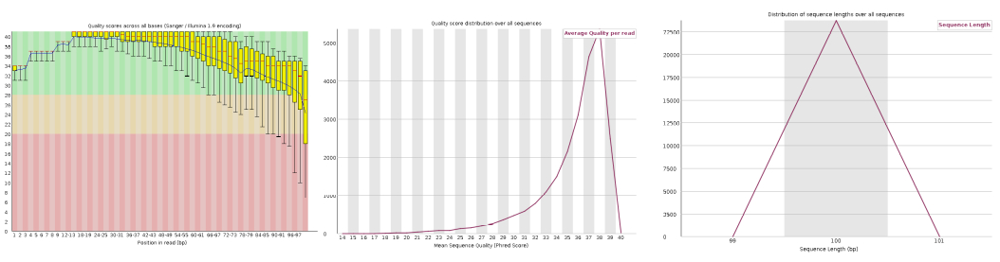
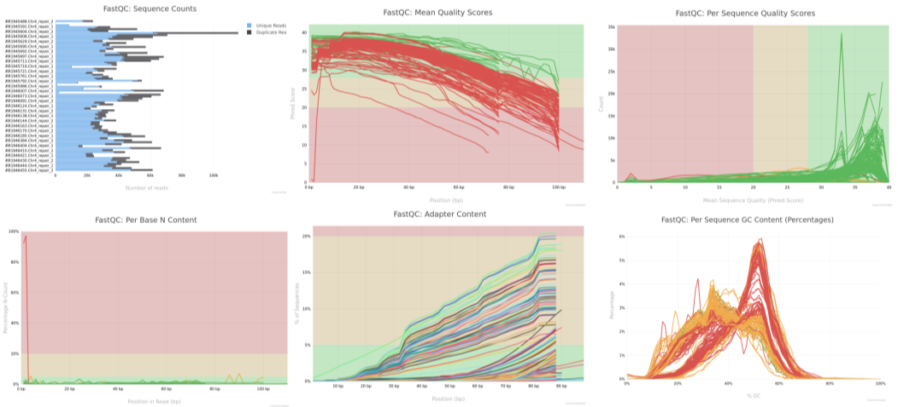
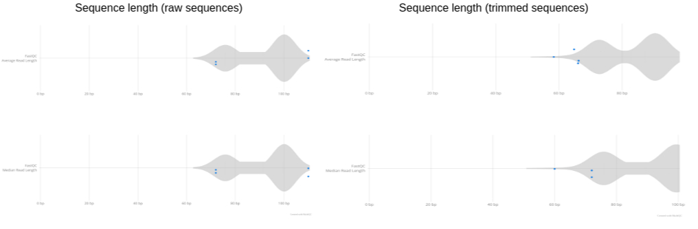
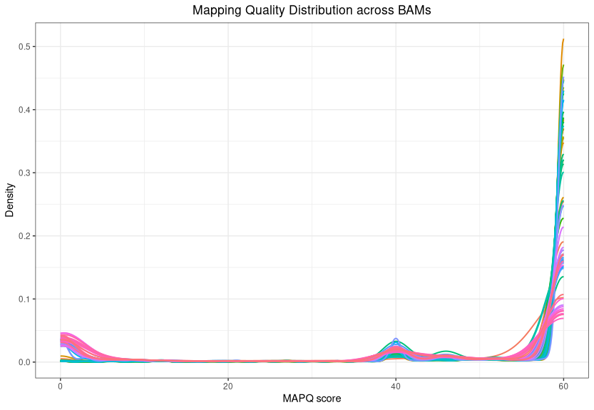
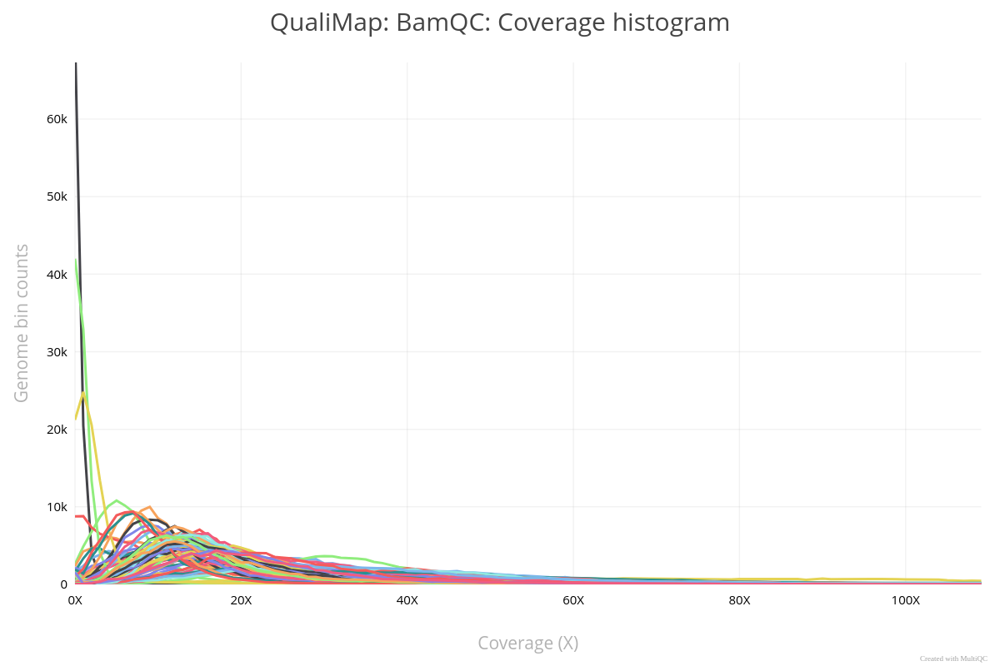

Practical Day 1: FASTQ to VCF - Part 1
Learning Objectives
- Access the HPC (using MobaXterm on Windows or Terminal on Mac/Linux).
- Explore raw FASTQ read files and understand the structure of FASTQ data.
- Install new tools, set environment variables, or load pre-installed tools on the HPC system.
- Check the quality of FASTQ reads using tools like FASTQC and interpret the output statistics.
- Trim FASTQ reads to remove adapters or low-quality bases using appropriate tools.
- Write a script (bash/python, etc.) to automate workflows, such as running commands on multiple files in a for loop, and submit jobs to an HPC system using SLURM SBATCH scheduling.
Tools to be Used
- FASTQC / MULTIQC: For quality control of FASTQ reads.
- Trimmomatic / fastp: For read trimming.
- BWA: For mapping reads to a reference genome.
- SAMTOOLS: For conversion of SAM to BAM files.
- QUALIMAP: For quality control of BAM files.
Step 1: Connecting to HPC and Organizing the Workspace
Connect to the HPC (RAMSES)
For Windows users: Use MobaXterm. For Mac/Linux users: Use the Terminal application.
Log in to the HPC cluster using your login credentials.
ssh -Y qbius030@ramses4.itcc.uni-koeln.de
# Replace 'qbius030' with your specific username.
# Enter your password when prompted.Check Your Current Directory
pwdIf you are not in your home directory, navigate to it:
cd /home/group.kurse/qbius030/
# Replace 'qbius030' with your specific username.Copy Raw Data to Your Home Directory
cp -r /scratch/tali/Practical_Day_1/sample_project_data .Create a Directory for Analysis
mkdir -p Practical_Day_1/{fastqc,trimming,mapping,bamqc}fastqc: for storing quality control results of fastq files.trimming: for storing trimmed read files.mapping: for storing read mapping outputs.bamqc: for storing quality control results of bam files.
Examine the Contents of the Raw FASTQ Files
Navigate to the location of the raw FASTQ files:
cd /home/group.kurse/qbius030/sample_project_dataExample 1: View the first 8 lines of a FASTQ file to examine its structure.
zcat SRR1945488.Chr4_repair_1.fastq.gz | head -n 8Example 2: Count the number of reads in a compressed FASTQ file.
zcat SRR1945488.Chr4_repair_1.fastq.gz | wc -l
# Divide by 4 to get the number of reads.Example 3: Print the second line of each read (sequence line) from a compressed FASTQ file.
zcat SRR1945488.Chr4_repair_1.fastq.gz | awk 'NR % 4 == 2 {print;}' | lessExample 4: Print the first 10 sequences (second line of each read) from a compressed FASTQ file.
zcat SRR1945488.Chr4_repair_1.fastq.gz | awk 'NR % 4 == 2 {print;}' | head -n 10Plot: FASTQ Read Quality

Figure: Example FastQC per-base quality plot.
Instructions for Running Bioinformatics Jobs on the HPC
For quality control and downstream processing of FASTQ files,
we will execute various tasks on the HPC using Bash scripts with for loops.
Steps: 1. Prepare your script using a text editor and save it as your_bash_script.sh. 2. Submit your job in the terminal using: bash sbatch your_bash_script.sh 3. For more details, consult the CHEOPS Brief Instructions.
Step 2: Quality Control of raw FASTQ reads using fastqc
Check if required module is installed:
module availCreate and Submit a SLURM Script for FASTQC Analysis
#!/bin/bash -l
#SBATCH --nodes=1
#SBATCH --ntasks-per-node=8
#SBATCH --mem=10gb
#SBATCH --time=01:00:00
#SBATCH --account=UniKoeln
#SBATCH --output=/home/group.kurse/qbius030/Practical_Day_1/fastqc/fastqc_repair.out
#SBATCH --error=/home/group.kurse/qbius030/Practical_Day_1/fastqc/fastqc_repair.err
module load bio/FastQC
INPUT_DIR="/home/group.kurse/qbius030/sample_project_data/"
OUTPUT_DIR="/home/group.kurse/qbius030/Practical_Day_1/fastqc"
mkdir -p $OUTPUT_DIR
for FILE in $INPUT_DIR/*Chr4_repair_1.fastq.gz $INPUT_DIR/*Chr4_repair_2.fastq.gz; do
fastqc -o $OUTPUT_DIR "$FILE"
donePlot: MultiQC Summary (after running MultiQC on FastQC results)

How to Fix the “DOS Line Breaks” Error on a Linux Cluster
If you see:
sbatch: error: Batch script contains DOS line breaks (\r\n)Fix with:
dos2unix fastqc.sh
cat -v fastqc.sh # Check for ^M charactersCheck job status:
squeue -u qbius030View HTML output in browser:
firefox SRR1945697.Chr4_repair_paired_2_fastqc.htmlStep 3: Quality trimming of raw FASTQ reads using Trimmomatic
Check if required module is installed:
module availExample SLURM script:
#!/bin/bash -l
#SBATCH --nodes=1
#SBATCH --ntasks-per-node=8
#SBATCH --mem=10gb
#SBATCH --time=01:00:00
#SBATCH --account=UniKoeln
#SBATCH --output=/home/group.kurse/qbius030/Practical_Day_1/trimming/fastqc_trim.out
#SBATCH --error=/home/group.kurse/qbius030/Practical_Day_1/trimming/fastqc_trim.err
module load bio/Trimmomatic/
INPUT_DIR="/home/group.kurse/qbius030/sample_project_data"
OUTPUT_DIR="/home/group.kurse/qbius030/Practical_Day_1/trimming"
ADAPTERS="/home/group.kurse/qbius030/sample_project_data/adapters/Illumina_PE.fa"
mkdir -p $OUTPUT_DIR
for FORWARD_FILE in ${INPUT_DIR}/*.Chr4_repair_1.fastq.gz; do
REVERSE_FILE="${FORWARD_FILE/_1.fastq.gz/_2.fastq.gz}"
BASE_NAME=$(basename $FORWARD_FILE _1.fastq.gz)
FORWARD_PAIRED="${OUTPUT_DIR}/${BASE_NAME}_paired_1.fastq.gz"
FORWARD_UNPAIRED="${OUTPUT_DIR}/${BASE_NAME}_unpaired_1.fastq.gz"
REVERSE_PAIRED="${OUTPUT_DIR}/${BASE_NAME}_paired_2.fastq.gz"
REVERSE_UNPAIRED="${OUTPUT_DIR}/${BASE_NAME}_unpaired_2.fastq.gz"
java -jar $TRIMMOMATIC/trimmomatic.jar PE \
-threads 4 \
$FORWARD_FILE \
$REVERSE_FILE \
$FORWARD_PAIRED \
$FORWARD_UNPAIRED \
$REVERSE_PAIRED \
$REVERSE_UNPAIRED \
ILLUMINACLIP:${ADAPTERS}:2:30:10 \
LEADING:3 \
TRAILING:3 \
SLIDINGWINDOW:4:15 \
MINLEN:36
donePlot: Read Length Distribution Before and After Trimming

Figure: Example plot showing read length distribution before and after trimming.
Step 4: Mapping to reference using BWA-mem2 + samtools
Check if required module is installed:
module availExample SLURM script:
#!/bin/bash -l
#SBATCH --nodes=1
#SBATCH --ntasks-per-node=8
#SBATCH --mem=10gb
#SBATCH --time=01:00:00
#SBATCH --account=UniKoeln
#SBATCH --output=/home/group.kurse/qbius030/Practical_Day_1/mapping/bwa_mapping.out
#SBATCH --error=/home/group.kurse/qbius030/Practical_Day_1/mapping/bwa_mapping.err
module load bwamem2
module load samtools
INPUT_DIR="/home/group.kurse/qbius030/Practical_Day_1/trimming"
OUTPUT_DIR="/home/group.kurse/qbius030/Practical_Day_1/mapping"
REFERENCE="/home/group.kurse/qbius030/sample_project_data/reference_data/Arabidopsis_thaliana.TAIR10.dna.chromosome.4_98K.fasta"
# bwa-mem2 index $REFERENCE # Uncomment if not already indexed
for FORWARD_FILE in ${INPUT_DIR}/*_paired_1.fastq.gz; do
REVERSE_FILE="${FORWARD_FILE/_paired_1.fastq.gz/_paired_2.fastq.gz}"
BASE_NAME=$(basename $FORWARD_FILE _paired_1.fastq.gz)
SAM_FILE="${OUTPUT_DIR}/${BASE_NAME}.sam"
BAM_FILE="${OUTPUT_DIR}/${BASE_NAME}.bam"
SORTED_BAM="${OUTPUT_DIR}/${BASE_NAME}.sorted.bam"
bwa-mem2 mem -M -t 20 $REFERENCE $FORWARD_FILE $REVERSE_FILE > $SAM_FILE
samtools view -bS $SAM_FILE > $BAM_FILE
samtools sort -@ 20 $BAM_FILE -o $SORTED_BAM
samtools index $SORTED_BAM
rm $SAM_FILE
rm $BAM_FILE
donePlot: Mapping Quality Distribution

Figure: Example plot showing mapping quality distribution.
Step 5: Run and Configure Qualimap for BAMQC Analysis
Set Up R Environment for Plotting with Qualimap
mkdir -p ~/R_libs
touch ~/.RprofileIn R:
install.packages("XML", lib = "~/R_libs")
install.packages("optparse", lib = "~/R_libs")
install.packages("BiocManager", lib = "~/R_libs")
BiocManager::install("NOISeq", lib = "~/R_libs", force = TRUE)
BiocManager::install("Biobase", lib = "~/R_libs")
install.packages("getopt", lib = "~/R_libs")
q()Set .libPaths() to local library in .Rprofile:
nano ~/.Rprofile
# Add this line:
.libPaths("/home/group.kurse/qbius030/R_libs")Check library path in R:
.libPaths()Create and Submit a SLURM Script for BAMQC Analysis
#!/bin/bash -l
#SBATCH --nodes=1
#SBATCH --ntasks-per-node=8
#SBATCH --mem=10gb
#SBATCH --time=01:00:00
#SBATCH --account=UniKoeln
#SBATCH --output=/home/group.kurse/qbius030/Practical_Day_1/bamqc/bamqc.out
#SBATCH --error=/home/group.kurse/qbius030/Practical_Day_1/bamqc/bamqc.err
module load qualimap
BAM_DIR="/home/group.kurse/qbius030/Practical_Day_1/mapping"
BAMQC_DIR="/home/group.kurse/qbius030/Practical_Day_1/bamqc"
mkdir -p $BAMQC_DIR
for BAM_FILE in $BAM_DIR/*.sorted.bam; do
SAMPLE_NAME=$(basename $BAM_FILE .sorted.bam)
QUALIMAP_OUTPUT_DIR="$BAMQC_DIR/$SAMPLE_NAME"
echo "Running Qualimap BAMQC for $SAMPLE_NAME"
qualimap bamqc -bam $BAM_FILE -outdir $QUALIMAP_OUTPUT_DIR -outformat HTML -outfile "${SAMPLE_NAME}_report.html"
done
INPUT_GROUPS_FILE="$BAMQC_DIR/input_groups.txt"
rm -f $INPUT_GROUPS_FILE
echo "Creating input groups file for Multi-BAMQC"
for BAMQC_OUTPUT_DIR in $BAMQC_DIR/*; do
if [ -d "$BAMQC_OUTPUT_DIR" ]; then
SAMPLE_NAME=$(basename $BAMQC_OUTPUT_DIR)
echo -e "${SAMPLE_NAME}\t${BAMQC_OUTPUT_DIR}\t1" >> $INPUT_GROUPS_FILE
fi
done
MULTIBAMQC_DIR="/home/group.kurse/qbius030/Practical_Day_1/bamqc/multibamqc"
mkdir -p $MULTIBAMQC_DIR
echo "Running Qualimap Multi-BAMQC"
qualimap multi-bamqc -d $INPUT_GROUPS_FILE -outdir $MULTIBAMQC_DIR -outformat PDF
echo "Qualimap analysis complete. Reports saved in $MULTIBAMQC_DIR."View results using Firefox:
cd /home/group.kurse/qbius030/Practical_Day_1/bamqc/multibamqc
firefox report.pdfPlot: Qualimap Coverage Plot

Figure: Example Qualimap coverage plot.
Wrapping Up Practical Day One
Thank you for your active participation today! 🎉
Great job on tackling today’s challenges—we hope you found it engaging and insightful.
See you next week for more exciting learning and discoveries! Keep practicing and exploring until then! 🚀